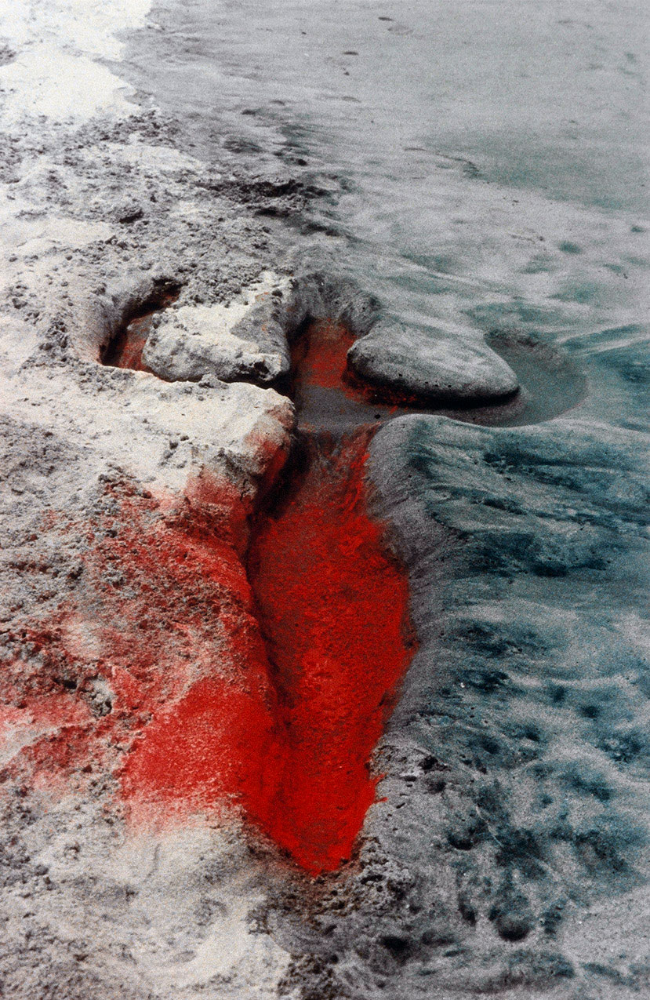

Land Art e artiste della Land Art
La Land Art è un movimento artistico non convenzionale nato negli Stati Uniti negli anni Sessanta, nell’ambito di un più ampio interesse per l’ecologia e la tutela dell’ambiente. Si caratterizza per la scelta degli artisti di abbandonare i tradizionali musei e le gallerie d’arte, uscendo dalla cosiddetta white box per cercare spazi più aperti e vasti. Questa scelta portò a lavorare direttamente nella natura, spesso utilizzando materiali naturali reperiti nei luoghi stessi, poiché nessuna galleria o museo avrebbe potuto offrire ciò che uno spazio aperto permetteva. Gli artisti decisero di impiegare materiali naturali e rifiutarono di realizzare prodotti industriali riproducibili dalle fabbriche o dai sistemi produttivi. Fu durante la seconda ondata del femminismo che le donne cercarono di conquistare uno spazio all’interno di un mondo dell’arte dominato dagli uomini. La prima mostra dedicata alla Land Art, Earth Works, organizzata nel 1968 presso la Dwan Gallery di New York, presentava esclusivamente artisti uomini. Anche le esposizioni di Land Art dell’anno successivo continuarono a essere composte unicamente da artisti maschi. La sproporzione nella quantità di informazioni disponibili sulle artiste rispetto agli artisti è evidente. Le opere degli uomini vengono generalmente analizzate secondo temi e linguaggi, mentre le artiste vengono spesso raggruppate in una piccola sezione dedicata alle donne, indipendentemente dal genere artistico delle loro opere, accomunate esclusivamente dal loro sesso.
In questo saggio desidero presentare la mia ricerca sulle artiste della Land Art, classificandole non in base al genere, ma secondo il loro lavoro, i temi che affrontano e i mezzi espressivi che utilizzano.
L’uso del corpo
Ana Mendieta
Siluetas


Nata a Cuba, Ana Mendieta si trasferì negli Stati Uniti nel 1961 all’età di dodici anni. Visse inizialmente, insieme alla sorella, in alcuni campi profughi prima di stabilirsi nello Iowa. Suo padre rimase a Cuba come prigioniero politico e gli anni di separazione alimentarono nell’artista un profondo desiderio di ristabilire un legame con il mondo che la circondava. Tra il 1973 e il 1980 realizzò la serie Silueta (Silhouette), composta da oltre duecento opere. Questi lavori, basati sull’impiego del corpo, possono essere collocati tra la Land Art, la Body Art e la Performance Art. Durante le performance, Mendieta imprimeva il proprio corpo nel paesaggio, lasciandone la traccia sul terreno. Si esibiva nuda, ricoperta di piume, sangue, fiori, pietre e altri materiali organici che riflettevano il suo interesse per i rituali religiosi ispirati al cattolicesimo cubano e alla Santería. Le performance erano spesso site-specific, realizzate a Cuba, in Messico e nello Iowa, ed erano sempre effimere. Dopo aver lasciato la propria impronta, l’artista si allontanava, permettendo che essa venisse cancellata dall’acqua, bruciata, riassorbita dalla natura o dissolta nel tempo. Le opere sopravvivono oggi principalmente attraverso fotografie e documentazioni. Nel complesso della sua produzione, Mendieta affronta temi quali la sessualità, la spiritualità, lo sradicamento culturale, il femminismo e l’identità, rivelando al tempo stesso il profondo rapporto che la lega alla Terra.
Untitled: Imagen de Yágul

In una delle sue opere più celebri, Imagen de Yágul, l’artista compare nella fotografia finale, distesa all’interno di una tomba zapoteca. Il suo corpo nudo è ricoperto di fiori bianchi che sembrano sbocciare direttamente dalla sua figura.
Untitled: Siluetas Series

Un’altra performance della serie consisteva nel tracciare il contorno del proprio corpo sulla spiaggia di La Ventosa, in Messico. Successivamente Mendieta riempiva l’impronta con tempera rossa, lasciando che le onde del mare la cancellassero lentamente, fino a farla scomparire completamente.
L’utilizzo del corpo costituisce un potente mezzo espressivo per comunicare, creare, denunciare e provocare. Un’altra artista che ricorre frequentemente al proprio corpo nelle sue opere è Regina José Galindo.
Regina José Galindo
Nata a Città del Guatemala nel 1974, dove tuttora vive e lavora, Regina José Galindo affronta nelle sue opere temi universali quali l’ingiustizia sociale, la discriminazione di genere e razziale e gli abusi derivanti da rapporti di potere e di sopraffazione nella società contemporanea. Le sue opere hanno una forte dimensione politica e storica.
Tierra


Quest’opera denuncia le torture, gli omicidi e le sepolture di popolazioni indigene e oppositori politici durante il genocidio che devastò il Guatemala per trentasei anni, causando oltre 200.000 vittime. Le popolazioni indigene erano considerate dall’esercito nemici interni e presunti sostenitori della guerriglia; per questo motivo furono perseguitate. Lo Stato attuò la strategia della terra bruciata, pratica caratteristica del conflitto armato guatemalteco. I soldati incendiarono villaggi, stuprarono, torturarono e assassinarono migliaia di persone. Molti corpi furono sepolti in fosse comuni, che oggi costituiscono una delle principali prove storiche del genocidio.
Come nella serie Siluetas di Mendieta, anche Galindo rievoca e testimonia un trauma. Tuttavia, mentre in Mendieta il rapporto con la terra assume un carattere armonico e spirituale, in Galindo esso diventa ostile e violento, accentuato dall’escavatore meccanico che scava una fossa attorno al corpo immobile dell’artista.
Mazorca


In questa performance, realizzata nel 2014, Galindo rimane nuda e immobile, nascosta in un campo di mais, mentre quattro uomini armati di machete abbattono progressivamente le piante fino a scoprirla. Durante il conflitto in Guatemala, infatti, il mais veniva tagliato, bruciato e distrutto dall’Esercito Nazionale come parte della strategia militare volta ad annientare le comunità indigene, considerate basi di appoggio della guerriglia.
Opere politiche
Agnes Denes
Wheatfield – A Confrontation


Questa è l’opera più iconica e conosciuta di Agnes Denes. Venne realizzata nel 1982 a Battery Park, a New York, dove l’artista coltivò e raccolse un campo di grano su un’area di circa due acri. Il luogo si trovava a pochi passi da Wall Street e dal World Trade Center, di fronte alla Statua della Libertà. Su quel terreno, il cui valore era stimato in 4,5 miliardi di dollari, Denes, grazie a una sovvenzione di 10.000 dollari del Public Art Fund, insieme a un gruppo di volontari, arò il terreno ricoperto di detriti e seminò a mano il grano. Il 16 agosto 1982 furono raccolte circa 1.000 libbre (oltre 450 kg) di grano dorato. Il raccolto fu successivamente esposto all’International Art Show to End World Hunger e viaggiò con la mostra in ventotto città del mondo. I visitatori ricevevano semi del raccolto e li piantavano nei rispettivi Paesi. Quest’opera crea un potente paradosso. Wheatfield è un simbolo universale che rappresenta il cibo, l’energia, il commercio, gli scambi internazionali e l’economia. Allo stesso tempo denuncia la cattiva gestione delle risorse, lo spreco, la fame nel mondo e le problematiche ambientali, richiamando l’attenzione sulle priorità distorte della società contemporanea.
Zorka Ságlová
Homage to Gustav Obermann

L’azione all’aperto Homage to Gustav Obermann venne realizzata nel marzo del 1970 come tributo al calzolaio Gustav Obermann, originario della città di Humpolec. All’inizio della Seconda guerra mondiale, Obermann era solito percorrere le colline circostanti per protestare personalmente contro l’occupazione tedesca, accendendo fuochi sulle alture. Per queste azioni fu anche arrestato dalla polizia. Nei campi di Bransoudov, nei pressi di Humpolec, Zorka Ságlová e alcuni amici disposero circa venti cumuli di stracci imbevuti di benzina, incendiandoli nel paesaggio innevato durante la notte. Questa silenziosa azione di Land Art, realizzata con la partecipazione di pochissime persone, aveva lo scopo di lasciare impronte permanenti nella neve. Oltre al riferimento a Obermann, il luogo era ricco di significati storici e mitologici: già nel XIII secolo era infatti associato a leggende pagane che narravano di frequenti incendi sulle colline circostanti. Per Ságlová e i suoi collaboratori, i fuochi crearono un momento di intensa suggestione estetica e romantica, mentre i piccoli crateri lasciati dalle fiamme apparivano e affondavano lentamente nella neve.
Laying Napkins Near Sudomer

Per quest’opera l’artista dispose circa settecento tovaglioli sull’erba, formando un grande triangolo in un campo nei pressi di Sudomer, luogo della celebre battaglia hussita del 1420. L’azione richiama una leggenda locale secondo cui le donne hussite stendevano pezzi di stoffa nelle zone paludose del campo di battaglia per impigliare gli speroni dei cavalieri cattolici romani quando smontavano da cavallo, rendendoli così facili bersagli per i guerrieri hussiti.
Modifica del paesaggio
Agnes Denes
Tree Mountain – A Living Time Capsule


Situata in Finlandia, presso le cave di ghiaia di Pinzio, vicino a Ylöjärvi, quest’opera è un imponente intervento di earthwork ambientale. Per realizzarla, Agnes Denes trasformò un’ex cava di ghiaia in una foresta vergine artificiale, piantando 11.000 alberi di abete con l’aiuto di 11.000 persone. Gli alberi furono disposti seguendo un complesso schema matematico ideato dall’artista, basato sulla combinazione della sezione aurea e del sistema di crescita osservabile nell’ananas e nel girasole. Denes riuscì inoltre a ottenere una tutela legale dell’opera per quattrocento anni, un periodo sufficiente affinché la foresta potesse svilupparsi in modo autonomo e diventare un ecosistema autosufficiente.
A ciascuno degli 11.000 partecipanti venne consegnato un certificato che lo nominava custode di uno degli alberi piantati. Si tratta del primo progetto in Finlandia, e di uno dei primi al mondo, in cui un’artista interviene direttamente per riparare un danno ambientale attraverso un’opera d’arte ecologica progettata per le generazioni presenti e future. Tree Mountain rappresenta un autentico gesto di tutela ambientale destinato a durare nel tempo. Sebbene l’obiettivo iniziale fosse il recupero paesaggistico di una cava dismessa, il progetto contribuisce anche alla formazione di falde acquifere pulite e al miglioramento dell’ecosistema circostante.
Maya Lin
Storm King Wavefield

Storm King Wavefield occupa un’area di circa quattro acri ed è costituito da sette file di onde ondulate modellate in terra e ricoperte di erba. Le onde raggiungono un’altezza compresa tra 3 e 4,5 metri (10–15 piedi), mentre la distanza tra una depressione e l’altra è di circa 12 metri (40 piedi). L’opera è un’installazione site-specific dedicata allo studio delle forme generate dalle onde dell’acqua, tradotte in un intervento di Land Art su larga scala. Poiché le dimensioni dell’installazione corrispondono a quelle di vere onde marine, il visitatore sperimenta una percezione simile a quella di chi si trova in mare aperto, perdendo il contatto visivo con le onde circostanti mentre attraversa il paesaggio. Attraverso questa trasformazione del terreno, Maya Lin rende visibili e tangibili fenomeni naturali normalmente associati all’acqua, invitando il pubblico a riflettere sul rapporto tra percezione, natura e spazio.
Bibliografia
- Agnes Denes. agnesdenesstudio.com
- Ends of the Earth: Land Art to 1974, Haus der Kunst, Munich — Art Blart. artblart.com
- Land Art, Kate Chesters Art. katechesters.com
- Regina José Galindo. reginajosegalindo.com
- This Artwork Changed My Life: Ana Mendieta’s “Silueta” Series, Artsy. artsy.net
- Tree Mountain, Visit Finland. visitfinland.com